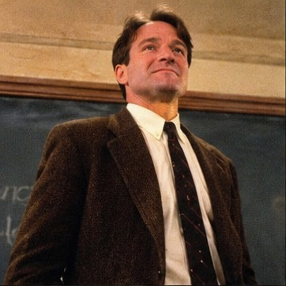

Meet the Characters
Dead Poets Society features memorable characters who explore friendship, poetry, individuality, courage, and the importance of following their dreams.

John Keating
Inspirational English Teacher
John Keating is an English teacher who uses creative teaching methods to inspire his students. He encourages them to appreciate poetry, think independently, and seize the day.
Importance: He is the central inspirational figure of the movie and teaches his students to discover their own voices and follow their passions.
Neil Perry
Passionate Student
Neil Perry is a talented student who develops a strong passion for acting. He dreams of becoming an actor but faces pressure from his father.
Importance: His story explores the conflict between personal dreams, family expectations, and the desire to make independent choices.
Todd Anderson
Shy and Quiet Student
Todd Anderson is a shy student who struggles with confidence and expressing his thoughts. With encouragement from John Keating, he gradually becomes more confident.
Importance: Todd represents personal growth and the importance of finding the courage to express one's own ideas.
Knox Overstreet
Romantic Student
Knox Overstreet is a student who develops romantic feelings for Chris Noel. He tries to express his feelings and become more confident in pursuing what he wants.
Importance: Knox's story highlights individuality, courage, and the importance of taking chances in life.
Charlie Dalton
Rebellious Student
Charlie Dalton is outspoken, adventurous, and rebellious. He enjoys challenging traditional rules and questioning authority.
Importance: Charlie represents rebellion, independence, and the willingness to challenge established expectations.
Richard Cameron
Rule-Following Student
Richard Cameron is a student who prefers following school rules and established authority. He is more concerned with maintaining order than challenging traditions.
Importance: Cameron represents conformity and the contrast between following expectations and thinking independently.
Discover More About the Movie
Explore the memorable moments and inspiring scenes of Dead Poets Society.
Back to HomeExplore Movie Gallery